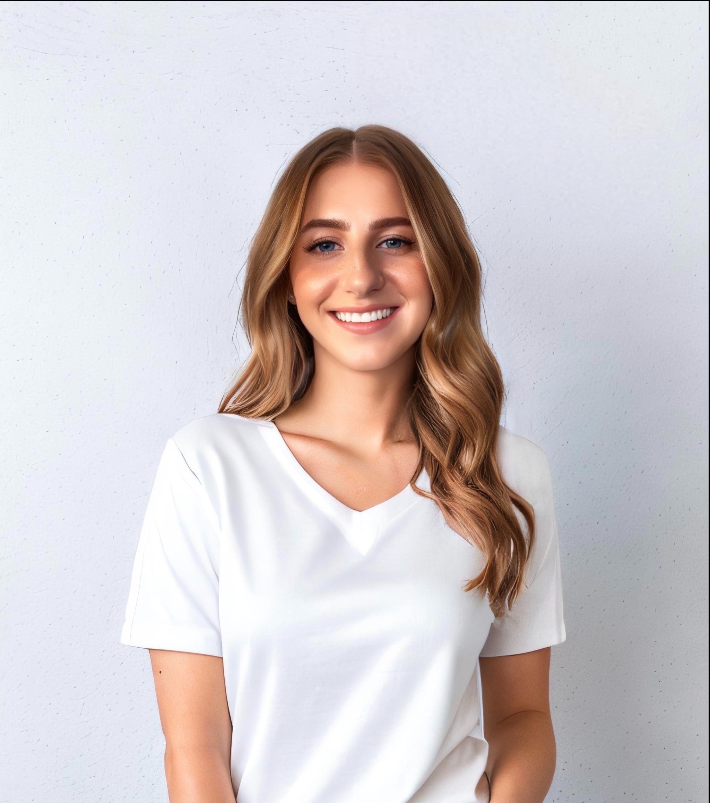

Kara Razzaboni

Summary
Software Quality Engineer | App and Website Manual Testing
Skills
- Creating documentation, reviewing requirements, writing test cases
- Creating Test Sets, Test Plans, and Test Executions
- Running Smoke, Sanity, Safety-Critical, and Regression testing
- Manual testing, black box testing, compatibility testing, UI/UX testing
- Utilized Ayla IoT for comprehensive device testing
- Automating smoke tests for iOS & Android apps (Perfecto)
- Experience with E-Commerce systems Shopify/Bonify/Recharge
- Utilizing Postman and MongoDB for testing
- Jira, Confluence, Xray, Practitest, Test Rail
- iOS and Android mobile application testing
- MacOS, Windows, Linux
Work Experience
Cue Health | San Diego, CA
May 2022 - June 2023
Software Test Engineer
- Web browser and backend software quality testing
- iOS and Android app quality testing
- Responsible for reviewing requirements, test case creation, smoke and
regression testing, and entering, reviewing, and retesting defects
- Created test reports for smoke and regression testing
- Tested web and app E-Commerce aspects in low and high
environments
SharkNinja | Needham, MA
June 2019 - May 2022
App/Software Test Engineer
- Tested SharkClean App quality using Shark Robotic Vacuums
- Responsible for creating requirements, writing test cases, automating
test cases
- Smoke and regression testing, entering, reviewing, and retesting
defects
- Validation of interoperability of robot, cloud, and app via the cloud
provider interface to verify performance and reporting out issues
- Tested Shark Robotic Vacuums for firmware and software quality
- Responsibilities consisted of testing requirements, reviewing and retesting defects, and updating test cases
- Compatibility matrix testing and ensuring traceability for releases
LTK Technologies | Hollis, NH
March 2017 - June 2019
Software Test Engineer
- Tested App and website for software quality
- Supported multiple LTK clients at the same time during several development cycles
- Collaborated with development teams to test, isolate, and debug issues during development cycles
Education
Salem State Univerity
Salem, MA
BSc. Biology / Biomedical Sciences
Links
About Page
Contact Me
LinkedIn Profile